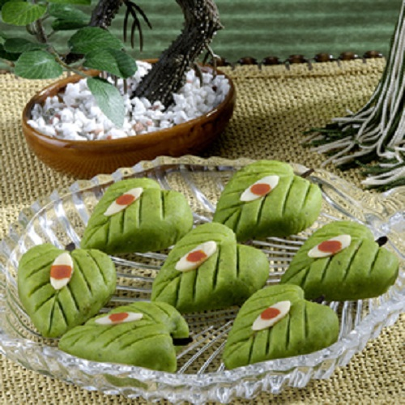
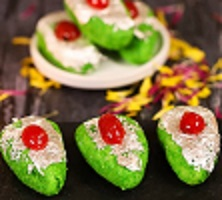

|
|
- ગાયનું દૂધ/સંપૂર્ણ ચરબીનું દૂધ- 1 લિટર
- લીંબુનો રસ - 3 ચમચી
- પાણી - 3 કપ
- ખાંડ - 1 કપ ભરણ માટે:
- માવા/ખોયા - 250 ગ્રામ
- ખાંડ - 1/2 કપ (પાઉડર)
- બદામ - 1/2 કપ (ઝીણી સમારેલી)
|
|
એક વાસણમાં દૂધ ઉમેરો. આગ પર સ્વિચ કરો અને તેને ઉકાળો.
Step2
હવે આગ બંધ કરો અને થોડીવાર આરામ કરો. તેમાં લીંબુનો રસ નાખીને મિક્સ કરો. દૂધ ચેન્ના અથવા પનીરમાં બદલાઈ ગયું છે.
Step3
આ ચેના અથવા પનીરને મલમલ અથવા સુતરાઉ કપડામાં ગાળી લો. તેને વહેતા પાણીની નીચે ઓછામાં ઓછા 5 થી 7 મિનિટ સુધી ધોઈ નાખો. જેથી લીંબુના રસની ગંધ ધોવાઇ જાય છે.
Step4
હવે આ ચેન્નાને ચુસ્ત રીતે ફોલ્ડ કરો અને બને તેટલું નીચોવી લો. તેને ઓછામાં ઓછા 15 મિનિટ સુધી લટકાવી દો.
Step5
તેને કપડામાંથી બહાર કાઢો. તમારી હથેળીનો ઉપયોગ કરીને તેને ઘસો અને જ્યાં સુધી તમને નરમ ટેક્સચર ન મળે ત્યાં સુધી તેને બનાવો. તમારી હથેળી પર ચેનાનું તેલ દેખાય ત્યાં સુધી ઘસો.
Step6
હવે તેમાંથી 7 થી 8 અંડાકાર આકારના બોલ બનાવો.
Step7
પ્રેશર કૂકરમાં પાણી અને ખાંડ ઉમેરો. ખાંડ ઓગળે એટલે તેમાં ચમ ચમ ઉમેરો.
Step8
7 થી 9 મિનિટ સુધી પકાવો. તેને વધારે રાંધશો નહીં અથવા તે રબરી જેવું થઈ જશે.
Step9
તેને પ્લેટમાં કાઢી લો. તેને ઓરડાના તાપમાને ઠંડુ થવા દો.
Step10
એક બાઉલમાં ખોયા અને દળેલી ખાંડ મિક્સ કરો.
Step11
તેને વચ્ચેથી સહેજ કાપીને તેમાં ખોયાનું સ્ટફિંગ નાખો.
Step12
તેને સમારેલી બદામથી ગાર્નિશ કરીને ઠંડુ કરીને સર્વ કરો.
|  |